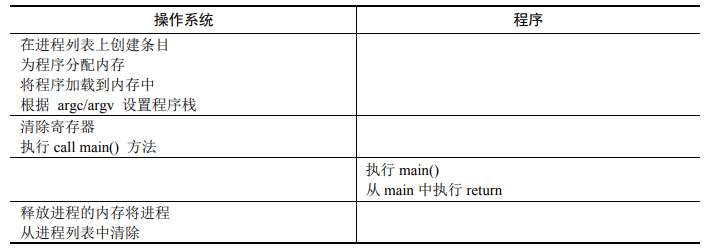
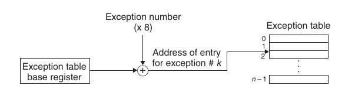
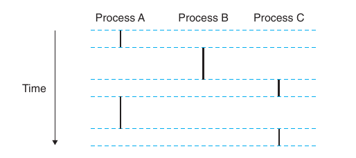
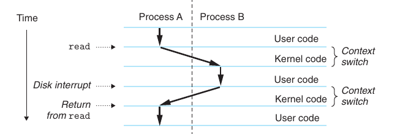
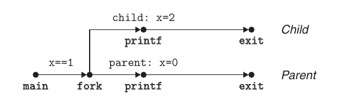

1. process
1. 异常🧐
(1). 直接执行的问题🧐

异常是一种 ECF，OS 通过异常解决直接执行面临的以下问题
- 权限控制: 用户程序不能完全控制系统，但也需要一些受限的操作
- 解决: OS 通过异常分割内核态和用户态
- 陷入异常后，内核设置处理器的某个位，进入特权模式
- 用户可以通过系统调用执行特权操作
- 进程切换: 中间一段代码是用户代码，在 cpu 未执行 OS 代码的情况下无法切换进程
- 解决: 陷入异常后，就执行了 OS 的代码
- 被动: 用户执行系统调用进行切换，但无法应对用户程序死循环的情况
- 主动: 时钟中断，OS 开机启动时钟，控制时钟设备每隔一段时间发送一次中断
(2). 异常表🧐

异常号一部分由 cpu 设计者分配，另一部分由 OS kernel 设计者分配，且用户无法访问
- 系统启动时，系统处于内核态，OS 初始化异常表，表目 $k$ 指向相应的 handler
- 系统执行某程序时，cpu 检测到异常事件、确定异常号 $k$ 并调用 handler
(3). 异常分类🧐
| Class | Cause | Async/Sync | Return Behavior |
|---|---|---|---|
| Interrupt | Signal from I/O device | 异步 | 总是返回到下一条指令 |
| Trap | Intentional | 同步 | 总是返回到下一条指令 |
| Fault | Potentially recoverable error | 同步 | 可能返回到当前指令 |
| Abort | Nonrecoverable error | 同步 | 不会返回 |
中断由外部 I/O 设备的信号导致，与指令无关，因此是异步的。执行逻辑:
- I/O 设备向 cpu 一个引脚发信号，并将异常号放到系统总线上 (该异常号标识引起中断的设备)
- 当前指令执行完成后，cpu 注意到引脚电压变高，从总线读取异常号并调用 handler
- 控制返回给下一条指令，仿佛什么也没发生
陷阱即系统调用，Linux 提供几百种系统调用 (32 ~ 255)
- C 程序可以通过
syscall函数直接进行系统调用，但标准 C 库有大多数系统调用的 wrapper - x86-64 通过
syscall指令进行系统调用，所有参数只通过寄存器传递，传递规则和函数相同
故障和终止
- 故障由错误情况引起，如果 handler 可以修正，控制返回到引起故障的指令，否则就调用内核的 abort routine，终止引起错误的应用程序
- 终止通常是致命的硬件错误，例如 DRAM / SRAM 位损坏造成的奇偶错误，handler 不会尝试返回，直接将控制交给 abort routine
Linux/x86-64 常见的 故障/终止 举例
| Exception Number | Description | Exception Class |
|---|---|---|
| 0 | Divide error | Fault |
| 13 | General protection fault | Fault |
| 14 | Page fault | Fault |
| 18 | Machine check | Abort |
- 除法错误: 除以 0 或 除法指令的结果对于目标操作数太大。Unix 不会尝试恢复
- 一般保护故障: 引用未定义虚存区域或尝试写入只读区，Linux 不会尝试恢复，一般报告为段错误
- 机器检查: 致命的硬件错误
2. 进程🧐
进程是计算机科学中最深刻、最成功的概念之一。不关注 OS 实现进程的细节，只关心进程的重要抽象:
- 独立的逻辑控制流: 仿佛程序独占处理器
- 独立的地址空间: 仿佛程序独立地使用内存系统
(1). 控制流🧐

每个进程执行它的逻辑流的一部分，然后被抢占 (preempted)，轮到其他程序，仿佛在独占 cpu
- 并发流 (concurrent): 逻辑流的时间区间与另一个流重叠，例如 Process AB、AC，此概念与处理器核数和计算机数无关
- 多进程轮流执行的概念称为多任务，一个进程控制流的某个时间段称为时间片 (time slice)
- 并行流 (parallel): 两个流在不同的处理器上并发，是并发流的真子集
(2). 用户模式和内核模式🧐
OS kernel 要想实现无懈可击的进程抽象，cpu 必须提供一种机制，可以限制程序访问的地址范围 & 执行的指令种类。cpu 通常用控制寄存器的某个模式位实现此功能，当模式位为 1，进程就运行在 kernel mode 中: 可以访问内存的任何位置，可以执行任意指令。
- 程序初始处于 user mode: 不允许执行 privileged instruction，例如改变模式位、发起 I/O 操作，也不允许访问内核区的代码和数据，只能由系统调用接口间接访问，任何越权操作都会导致故障
- 从 user mode 进入 kernel mode 唯一方法是通过异常，异常发生时，控制传递给 handler，cpu 同时进入 kernel mode；控制返回到应用程序时，cpu 也返回到 user mode
(3). 上下文切换🧐
上下文切换 (context switch) 是一种高层的 ECF，建立在异常机制之上，OS 通过此方式实现多任务。内核为每个进程维持上下文:
- 通用寄存器、浮点寄存器、程序计数器、状态寄存器、用户栈、内核栈等
- 内核数据结构，如: 页表、进程表、文件表
内核中的调度器 (scheduler) 代码决定抢占进程的策略，当前进程被抢占后，就会发生上下文切换:
- 保存当前进程的上下文，恢复先前某个被抢占进程的上下文
- 将控制传递给新恢复的进程
中断和系统调用都可以导致上下文切换，例如:
example

- 进程 A 由系统调用
read陷入到内核 mode，内核的 handler 请求磁盘控制器的 DMA 传输 - 磁盘取数据需要较长时间，内核很可能执行从 A 到 B 的上下文切换，而不是什么也不做:
- 切换前，内核代表进程 A 在 kernel mode 下执行指令
- 切换后，内核代表进程 B 在 user mode 下执行指令
- 进程 B 在 user mode 下运行了一会后，直到磁盘发出了一个中断信号，表示数据已经从磁盘传到了内存，此时内核可能认为 B 已经执行了足够长的时间，上下文切换到 A
3. 进程控制🧐
Unix 提供了很多 C 的操作进程的系统调用接口。
(1). 获取进程 ID🧐
每个进程都有唯一的正整数 ID，getpid 返回调用进程的 PID，getppid 返回调用进程的父进程的 PID.
#include <sys/types.h>
#include <unistd.h>
pid_t getpid(void);
pid_t getppid(void);
pid_t 在 Linux 的 types.h 中定义为 int
(2). 创建和终止进程🧐
#include <sys/types.h>
#include <unistd.h>
pid_t fork(void);
父进程通过 fork() 创建一个子进程，子进程有以下特性:
fork()在子进程中返回 0，在父进程中返回子进程的 PID- 继承父进程的上下文，因此和父进程并发执行、地址空间独立、共享文件
eg
int main() {
pid_t pid;
int x = 1;
pid = fork();
if (pid == 0) {
printf("child : x=%d\n", ++x);
exit(0);
}
printf("parent: x=%d\n", --x);
exit(0);
}

#include <stdlib.h>
void exit(int status);
exit 以 status 为退出状态终止调用进程。
(3). 回收子进程🧐
进程终止后，需要显式回收 (reaped) 以释放系统资源:
- 终止但未被回首的进程称为 zombie
- init 进程的 PID 为 1，在系统启动时由内核创建且不会终止，是所有进程的祖先。如果一个父进程终止，内核会安排 init 进程成为它的孤儿进程的养父
#include <sys/types.h>
#include <sys/wait.h>
pid_t waitpid(pid_t pid, int *statusp, int options);
pid_t wait(int *statusp); // <==> waitpid(-1, &status, 0);
pid_t pid: 判定等待集合的成员
pid > 0: 等待集合是一个单独的子进程，PID 为pidpid = -1: 等待集合是父进程的所有子进程
int options: 修改默认行为
0: 默认行为，挂起调用进程，直到 wait set 中某个进程终止，返回它的 PID。如果刚调用时就有进程终止，就立即返回。WNOHANG: 如果 wait set 中任何子进程都未终止，立即返回 0WUNTRACED: 挂起调用进程，直到 wait set 中某个进程终止 / 停止，返回其 PIDWCONTINUED: 挂起调用进程，直到 wait set 中一个正在运行的进程终止 或 wait set 中一个被停止的进程收到SIGCONT继续执行WNOHANG | WUNTRACED: 立即返回，wait set 中没有进程停止或终止则返回 0，否则返回相应的 PID
int *statusp: 如果 statusp 非空，就可以通过 MACRO(status) 的值查看退出状态
WIFEXITED: 如果子进程由exit或return终止，返回真WEXITSTATUS: 返回正常终止的退出值，WIFEXITED为真才有效WIFSIGNALED: 如果子进程由一个未捕获的信号终止，返回真WTERMSIG: 返回导致子进程终止的信号的编号，WIFSIGNALED为真才有效WIFSTOPPED: 如果子进程当前是停止的，返回真WSTOPSIG: 返回导致子进程停止的信号的编号，WIFSTOPPED为真才有效WIFCONTINUED: 如果子进程收到SIGCONT重新启动，返回真
example: reap zombie children
#include "order.h"
#define N 12
int main() {
int status, i;
pid_t pid;
/* Parent creates N children */
for (i = 0; i < N; ++i)
if ((pid = fork()) == 0)
exit(100 + i);
/* Parent reaps N children in no particular order */
while ((pid = waitpid(-1, &status, 0)) > 0) {
if (WIFEXITED(status))
printf("child %d terminated normally with exit status=%d\n", pid, WEXITSTATUS(status));
else
printf("child %d terminated abnormally\n", pid);
}
/* The only normal termination is if there are no more children */
if (errno != ECHILD)
fprintf(stderr, "waitpid error: %s\n", strerror(errno));
exit(0);
}
#include "order.h"
#define N 12
int main() {
int status, i;
pid_t pid[N], retpid;
/* Parent creates N children */
for (i = 0; i < N; ++i)
if ((pid[i] = fork()) == 0)
exit(100 + i);
/* Parent reaps N children in order */
i = 0;
while ((retpid = waitpid(pid[i++], &status, 0)) > 0) {
if (WIFEXITED(status))
printf("child %d terminated normally with exit status=%d\n", retpid, WEXITSTATUS(status));
else
printf("child %d terminated abnormally\n", retpid);
}
/* The only normal termination is if there are no more children */
if (errno != ECHILD)
fprintf(stderr, "waitpid error: %s\n", strerror(errno));
exit(0);
}
#include <errno.h>
#include <stdio.h>
#include <stdlib.h>
#include <string.h>
#include <sys/types.h>
#include <sys/wait.h>
#include <unistd.h>
(4). 进程休眠🧐
#include <unistd.h>
unsigned int sleep(unsigned int secs);
int pause(void);
sleep: 请求休眠时间到则返回 0，被信号中断则返回剩余秒数pause: 休眠调用进程直到收到一个信号
(5). 加载并运行程序🧐
#include <unistd.h>
int execve(const char *filename, const char *argv[], const char* envp[]);
execve 在当前进程上下文中加载并运行一个程序，如果运行成功则不会返回。